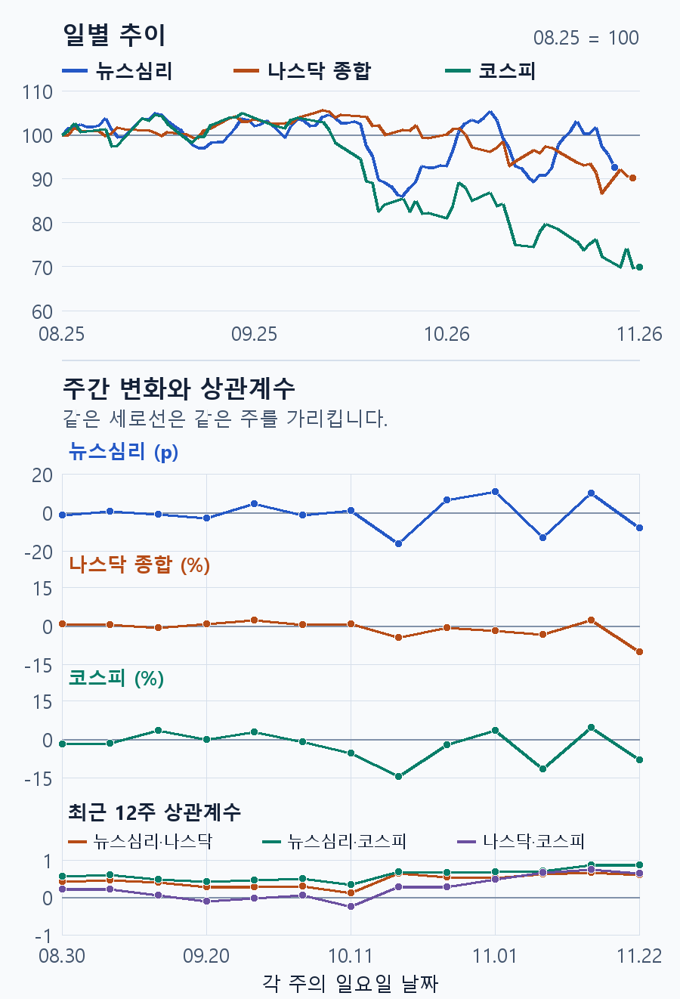
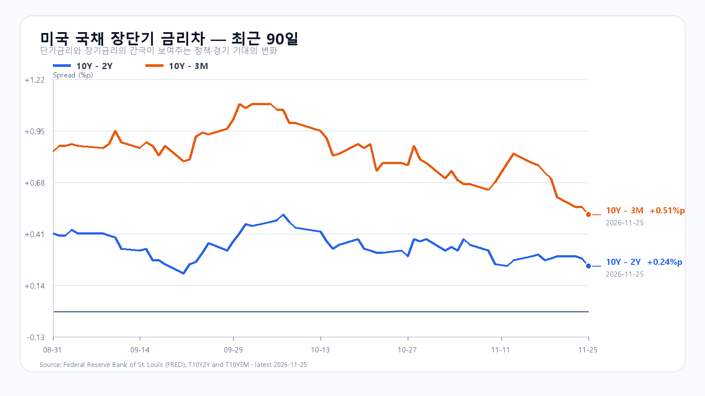

코스피는 26일 장중 4,817.77까지 올랐지만 저점에 가까운 4,711.21에서 거래를 마쳤다. 기관이 7,508억원을 순매수했고 외국인은 현물을 1,095억원 순매도했다. 미국 증시가 추수감사절로 쉰 오늘 아침에는 국내 매수세가 다시 들어오는지가 중요하다. 4,700선과 전날 코스피 저점 4,704.65가 첫 기준이다. 삼성증권 15시 40분 집계 · 코스피 마감
기준금리 3.25%, 외국인 현물과 선물은 엇갈려
한국은행은 기준금리를 0.25%포인트 올려 3.25%로 정했다. 반도체 수출 호조를 반영해 내년 성장률 전망을 2.9%에서 4.1%로 높였고, 내년 소비자물가 상승률은 2.4%로 내다봤다. 수출 증가가 기업 실적을 뒷받침하더라도 금리가 더 오를 가능성이 남아 있어 주가가 실적 전망을 곧바로 따라갈지는 지켜봐야 한다. 한국은행 통화정책방향 · 11월 경제전망
외국인은 코스피200 선물을 1,389억원 순매수했고 현물에서는 SK하이닉스를 사고 삼성전자를 팔았다. 정규장 종가도 SK하이닉스가 2.23% 오른 105만3,000원, 삼성전자가 0.35% 오른 17만1,300원으로 차이가 컸다. 코스피가 4,800선을 다시 넘으려면 두 종목에 매수세가 함께 들어오고 외국인 현물 수급도 개선돼야 한다. 삼성증권 수급 · 정규장 종가
| 항목 | 값 | 원천 기준 시각 |
|---|---|---|
| KOSPI 전일 종가 | 4,711.21 | 2026-11-26T15:30:00+09:00 |
| KODEX 전일 종가 | 45,885원 | 2026-11-26T15:30:00+09:00 |
| USD/KRW 하나은행 고시 | 1,344.00원 | 2026-11-27T05:33:16+09:00 |
| NQF 최근 거래 | 26,221.25 | 2026-11-27T02:59:59+09:00 |
| ESF 최근 거래 | 7,234.50 | 2026-11-27T02:59:59+09:00 |
| BZF 최근 거래 | 91.73 | 2026-11-27T04:29:29+09:00 |
| CLF 최근 거래 | 84.91 | 2026-11-27T04:29:50+09:00 |
국내 뉴스심리와 경기선행지수
- 한국은행 뉴스심리지수 91.07 · 2026-11-22 관측 · 주간 공표 · 7일 전보다 8.02포인트 하락 출처
- 뉴스심리지수 3개월 평균 100.76 · 2026-10까지 3개월 · 일별 지수의 월평균 사용 · 한 달 전 3개월 평균보다 1.51포인트 하락 출처
- 경기선행종합지수 순환변동치 104.1 · 2026-09 기준 · 전월보다 0.1포인트 하락 출처

세 지표는 2026.08.25 기준으로 100에서 시작합니다. 뉴스심리 최신 관측치는 11.22 91.07입니다. 최신 정규장 종가는 나스닥 종합 11.25 23,585.80, 코스피 11.26 4,711.21입니다.
한 주는 월요일부터 일요일까지입니다. 뉴스심리는 일요일 지수에서 전주 일요일 지수를 뺀 값, 주가는 그 주 마지막 거래일 종가의 전주 대비 수익률을 씁니다.
각 날짜의 피어슨 상관계수는 그 주까지의 최근 12주를 같은 주끼리 짝지어 계산했습니다. 아래 표의 한 행에서 세 지표의 주간 변화와 세 쌍의 상관계수를 함께 읽을 수 있습니다.
날짜별 주간 변화와 상관계수
| 주 종료일 | 뉴스심리 변화 | 나스닥 수익률 | 코스피 수익률 | 뉴스심리·나스닥 | 뉴스심리·코스피 | 나스닥·코스피 |
|---|---|---|---|---|---|---|
| 2026.11.22 | -8.02p | -10.02% | -7.95% | +0.60 | +0.87 | +0.65 |
| 2026.11.15 | +10.04p | +2.27% | +4.56% | +0.66 | +0.86 | +0.74 |
| 2026.11.08 | -13.25p | -3.37% | -11.71% | +0.62 | +0.71 | +0.66 |
| 2026.11.01 | +10.78p | -2.00% | +3.25% | +0.53 | +0.68 | +0.49 |
| 2026.10.25 | +6.57p | -0.71% | -2.08% | +0.55 | +0.66 | +0.28 |
| 2026.10.18 | -16.46p | -4.48% | -14.46% | +0.64 | +0.68 | +0.28 |
| 2026.10.11 | +1.10p | +0.64% | -5.39% | +0.12 | +0.33 | -0.24 |
| 2026.10.04 | -1.19p | +0.45% | -1.09% | +0.29 | +0.51 | +0.06 |
| 2026.09.27 | +4.70p | +2.06% | +2.71% | +0.29 | +0.47 | -0.02 |
| 2026.09.20 | -2.79p | +0.72% | -0.23% | +0.28 | +0.42 | -0.11 |
| 2026.09.13 | -1.17p | -0.66% | +3.33% | +0.40 | +0.48 | +0.07 |
| 2026.09.06 | +0.61p | +0.40% | -1.50% | +0.45 | +0.60 | +0.23 |
| 2026.08.30 | -1.23p | +0.85% | -1.79% | +0.43 | +0.57 | +0.23 |
키오시아와 엔비디아, GPU가 SSD에서 AI 데이터를 읽는 실험
키오시아는 엔비디아와 함께 SSD 144개를 연결해 한 랙에서 약 1.1페타바이트의 저장공간을 마련했다. 이 구조는 대규모 검색에 쓰이는 벡터를 최대 2조 개까지 다루는 것을 목표로 한다. GPU 가까이에서 자주 쓰는 데이터를 처리하는 HBM에 고성능 SSD를 더하면, GPU가 접근할 수 있는 데이터의 범위가 넓어진다. 키오시아가 별도로 공개한 GP2의 평가용 샘플은 2027년 말까지 제한된 고객에게 제공할 예정이다. 키오시아·엔비디아 실증 · GP2 발표
고성능 SSD를 쓰는 곳이 늘어도 범용 낸드 가격은 공급과 주문량에 좌우된다. 트렌드포스는 중국 클라우드 업체의 기업용 SSD 주문 감소 등을 들어 내년 1분기 낸드 계약가격이 최대 5% 내릴 것으로 전망했다. 26일 저녁 D램 현물에서는 DDR5 16Gb가 60.767달러로 보합이었고 DDR4 16Gb는 77.50달러로 0.32% 내렸다. 낸드 전망 · D램 현물
KODEX 레버리지, 45,585원 지지 여부가 첫 관문
KODEX 레버리지는 장중 48,085원까지 올랐다가 45,885원에 마쳤다. 전날 저가인 45,585원을 지키고 종가를 웃돌면 48,085원이 다음 저항이다. 코스피 종가 기본 범위는 4,650~4,800으로 본다. 4,800을 넘어 외국인과 프로그램 매수가 겹치면 4,940까지, 4,650을 밑돌고 두 수급이 함께 순매도면 4,500까지 열어 둔다. KODEX 일봉 · 코스피·KODEX 투자전략
미국 주식시장은 한국시간 오늘 밤 11시 30분에 열려 28일 오전 3시에 조기 종료한다. 추수감사절 직전인 25일 미국 국채 10년물 금리는 4.85%로, 2년물보다 0.24%포인트 높았다. NYSE 일정 · 미 재무부
